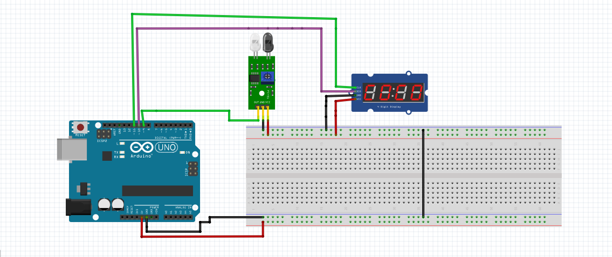
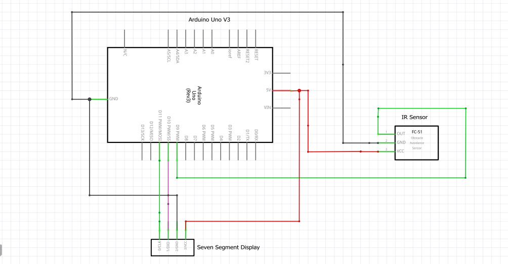
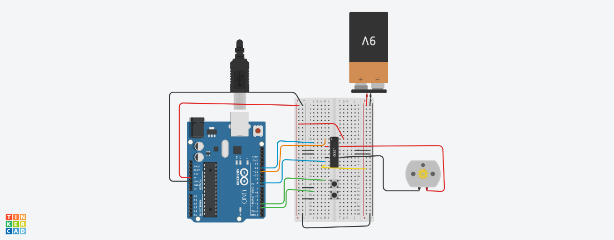
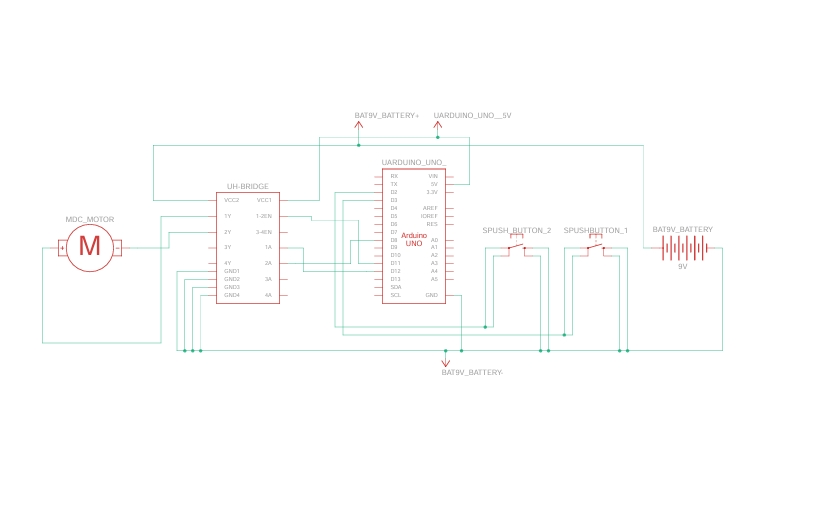
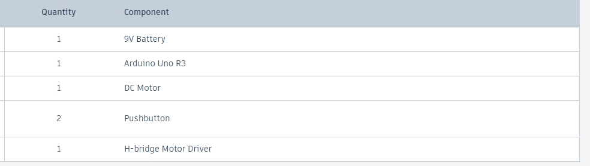
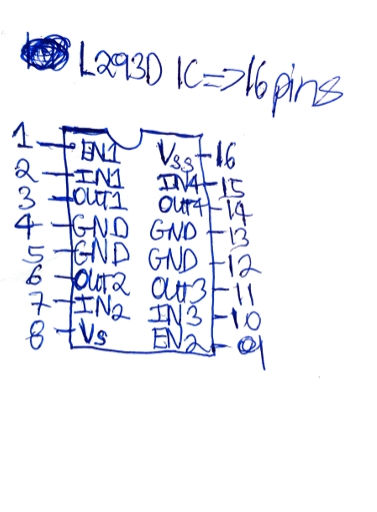

First Year Mechatronics Project
Object Counter with IR Sensors & TM1637 Display
Group Members: Balvayne, Daniel and Horecia
Breadboard Diagram

Schematic Diagram

Arduino Program


DC MOTOR
Breadboard Diagram

Schematic Diagram

Components List

Arduino Program
H-Bridge Model
